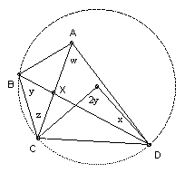

ABCD is a convex quadrilateral. RA is the circumradius of the three vertices other than A. RB, RC and RD are defined similarly. Show that RA + RC > RB + RD iff angle A + angle C > angle B + angle D.
Solution

Let X be the intersection of the diagonals. Without loss of generality angle AXD >= 90o. Hence the angles w, x, y, z are all acute (x is the angle ADX). If O is the center of the circle through BCD, then angle COD = 2y. So CD = 2RAsin y. So RA = CD/(2 sin y). Similarly, RB = CD/(2 sin w), RC = AB/(2 sin x), RD = AB/(2 sin z).
Note that A + C > B + D implies A + C > 180o and hence w > y. Since w + x = y + z, w > y implies x < z. So A + C > B + D implies 1/sin w < 1/sin y and 1/sin x > 1/sin z and hence RB < RA and RD < RC. So RA + RC > RB + RD.
Conversely, if A + C < B + D, then A + C < 180o and hence w < y and x > z. So RA + RC < RB + RD.

© John Scholes
jscholes@kalva.demon.co.uk
16 Dec 2002